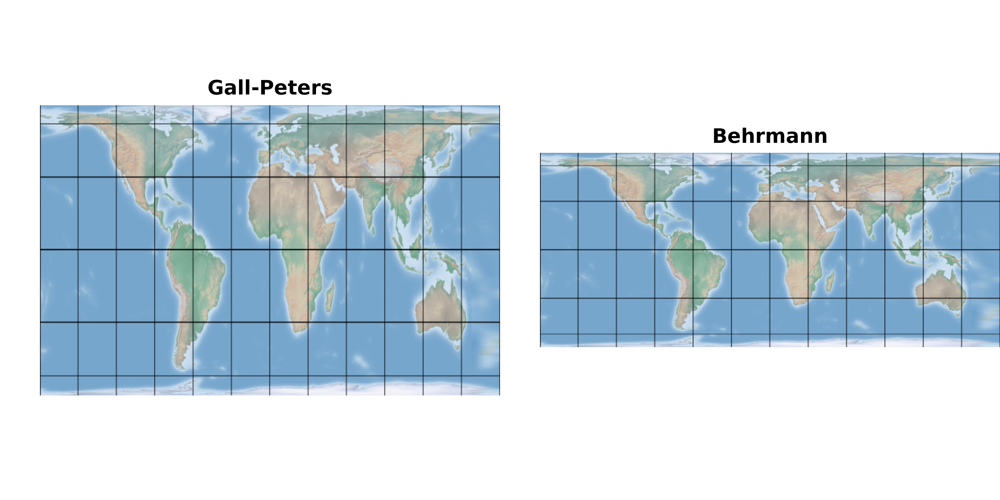

Which World projection to Select
Source:vignettes/articles/world-proj-illustration.Rmd
world-proj-illustration.RmdThis page provides a general overview of the world projections included in this package. It is not a comprehensive introduction; the information here is drawn from Chapter 9.3 of Choosing a Map Projection and various online sources. If you don’t have specific requirements, feel free to choose a projection based on your preferences of the map by appearance. However, if you do have particular needs, please seek more detailed information elsewhere.
library(sf)
library(terra)
library(projWiz)
# load world data, set extent
world_lonlat = terra::rast(world_shaded_relief)
ext(world_lonlat) <- c(-180,180,-90,90)
crs(world_lonlat) <- "epsg:4326"
# draw the graticule by hand
world_lonlat[1:360,c(1,1:12 * 60),1:3] <- 0
world_lonlat[c(1,1:6 * 60),1:720,1:3] <- 0
# plot function
quick_proj_world_map <- function(proj_type, title, crop=FALSE) {
# sometimes in polar araes will generate error, need to crop
if (crop) world_lonlat = crop(world_lonlat, ext(-180, 180, -86, 86))
new_proj = proj_world(proj_type)
# note that this function use the parameter of `mask=TRUE`, sometimes you may need to turn it to FALSE
projected_map = terra::project(world_lonlat, new_proj, mask=TRUE,method="average")
terra::plotRGB(projected_map, main=title,mar=c(0,2,0,0))
}Compromise
I would like to introduce the compromise projection family first because I believe this type will be more acceptable to most people. After all, its name—“compromise”—suggests that it sacrifices certain aspects, what else could it possibly have other than just looking more acceptable by most people?
Barrel-shaped
This barrel-shaped map family is derived from pseudocylindrical map projections, and I believe it’s a popular choice for world maps because it looks quite familiar to me.
par(mfrow=c(1,3))
quick_proj_world_map(world_proj_list$compromise$barrel_shape$Robinson,"Robinson")
quick_proj_world_map(world_proj_list$compromise$barrel_shape$Winkel_Tripel,"Winkel Tripel",TRUE)
quick_proj_world_map(world_proj_list$compromise$barrel_shape$Natural_Earth,"Natural Earth",TRUE)
The Robinson projection offers visually appealing representations of the entire world, but the distortion close to the poles is severe. The National Geographic Society adopted this projection for general-purpose world maps in 1988.
The Winkel Tripel projection addresses some of the distortions in polar areas. It replaced the Robinson projection as the standard for world maps in 1998.
The Natural Earth projection was designed to combine functionality with a familiar appearance, and it was introduced in 2008.
(It’s quite intersting that each projection comes to their important time approximately ten years apart from the previous one.)
I have tries setting different central longitudes for raster data. Except for Robinson projection, the other two projections produced unexpected results. Therefore, if you’re reprojecting a raster world map for this family of projections, I recommend the following:
If using 0° as central longitude, the Natural Earth projection looks better.
If using a different central longitude, the Robinson projection is just OK.
This is only for raster data reprojection, for vector data there are no such problems, but you may need to use
sf::st_break_antimeridian()first beforesf::st_transform().
Rectangular-shaped
This rectangular-shaped map family is derived from cylindrical map projections, and it’s not recommended by some people because the large distortion and misleading effects But the straight meridians could be advantageous for maps showing time zones. And maybe in certain cases, a rectangular boundary is simply necessary. So here are some rectangular-shaped projections.
par(mfrow=c(2, 2))
quick_proj_world_map(world_proj_list$compromise$rectangular$Miller_cylindrical_I, "Miller cylindrical I",TRUE)
quick_proj_world_map(world_proj_list$compromise$rectangular$Patterson, "Patterson")
quick_proj_world_map(world_proj_list$compromise$rectangular$Plate_Carree, "Plate Carrée")
terra::plotRGB(world_lonlat, main="Lon Lat", mar=c(0,2,0,0))
The Miller cylindrical projection is a modified version of the Mercator projection, having less exaggeration of continents compared to the original Mercator.
The Patterson projection exaggerates high-latitude areas less than the Miller cylindrical projection. (Looks most acceptable for me)
-
The Plate Carrée projections (also known as the equidistant cylindrical or geographic) : (from my understanding) It’s just like taking the long/lat coordinate system, applying some linear multiplication operations, replacing its name and saying “hey this is the projected coordinate system I’m using”. So it’s easy for data sharing because it requires minimal transformation or calculation.
- (Please don’t mix it up with longitude & latitude coordinate system, though they appear similar. The former one basically projects by assuming the Lon and Lat lines are equidistant, parallel lines, but the latter one doesn’t, it is an unprojected geographic coordinate system. If you asks some GIS softwares to do some calculations, no preprocessing is needed for the former, but the latter may require spherical transformations or projection process.)
Equal Area
Equal-area world map projections could be useful for area comparisons, such as in choropleth maps, or when estimating the number of features per unit area.
Barrel-shaped
Still these barrel-shaped world map projections look better, so I list them first.
par(mfrow=c(1,3))
quick_proj_world_map(world_proj_list$equal_area$barrel_shape$Eckert_IV,"Eckert IV")
quick_proj_world_map(world_proj_list$equal_area$barrel_shape$Wagner_IV,"Wagner IV")
quick_proj_world_map(world_proj_list$equal_area$barrel_shape$Equal_Earth,"Equal Earth")
- Eckert IV projection & Wagner IV projection: similar projections with low distortion
- Equal Earth projection: newer equal area projection, simple to implement and fast to evaluate
Please note that the Equal Earth projection hares the same issue as its cousin Natural Earth projection, regarding unexpected outcomes when reprojection of raster data occurs with a non 0° central longitude.
Elliptical-shaped
par(mfrow=c(1,2))
quick_proj_world_map(world_proj_list$equal_area$ellipse$Mollweide,"Mollweide")
quick_proj_world_map(world_proj_list$equal_area$ellipse$Hammer_Aitoff,"Hammer Aitoff")
- Mollweide projection and Hammer Aitoff projection are both good choices, just the former features straight parallels, while the latter has curved parallels.
The Hammer Aitoff projection could produce problems for raster projections with non 0° central longitude.
Rectangular-shaped
par(mfrow=c(1,2))
quick_proj_world_map(world_proj_list$equal_area$rectangular$Gall_Peters,"Gall-Peters")
quick_proj_world_map(world_proj_list$equal_area$rectangular$Behrmann,"Behrmann")
These are older projections that are basically the same projection just with different standard latitudes. If you need to use an equal-area world projection, the Behrmann projection is generally considered to be slightly better than the Gall-Peters projection. However, I believe it would be better just give these rectangular-shaped equal-area projections up.
Others
I’m not going to list properties like “Conformal”. You can simply use the PROJ string “+proj=merc” to specify the Mercator projection, but does anyone still use this projection today?
And If you’re looking for an equidistant world map: - For equidistant
property centered it on arbitrary point, please use
proj_hemisphere() with property="Equidistant"
- For equidistant property relative to two points, please look for
Two-point equidistant projection